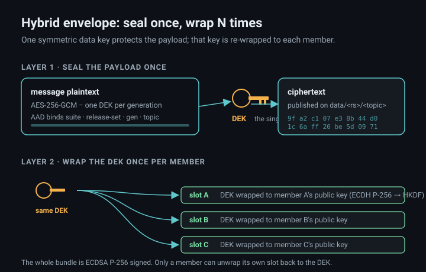
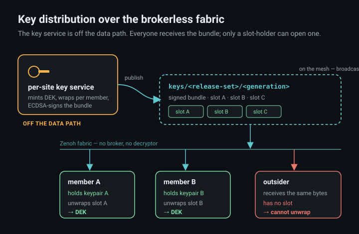
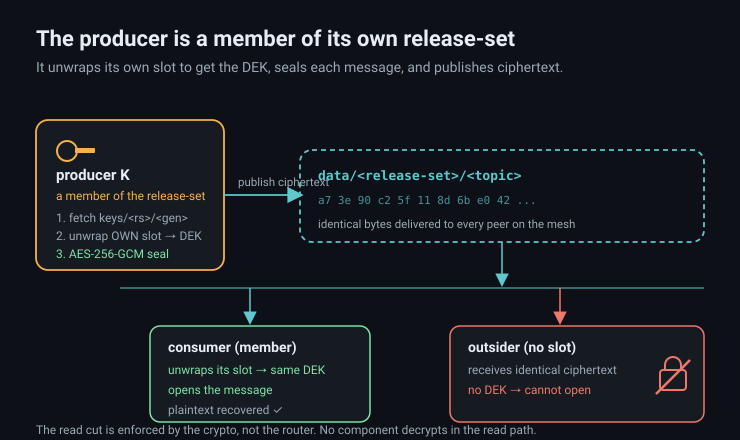
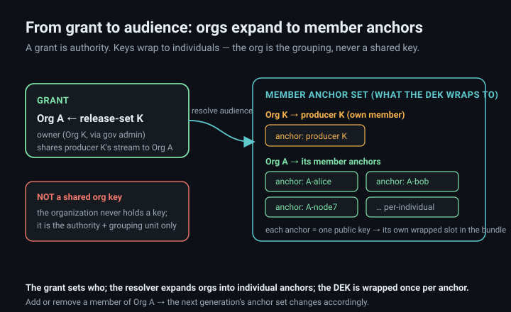
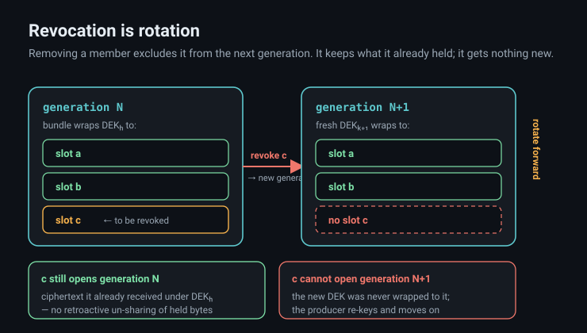
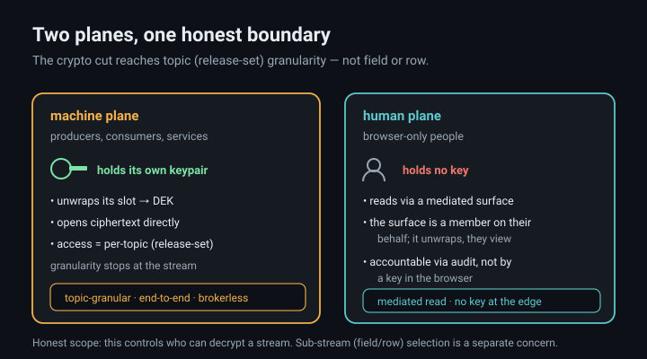

Hello Galaxy · grant-keyed data access
The owner grants who may read a stream. A key service turns that grant into cryptography. From then on the access control rides inside the ciphertext itself — no broker, no gatekeeper, nothing in the read path to decrypt on anyone's behalf.
Encrypting a stream separately for every reader would be wasteful and would leak the audience size into every message. Instead the payload is sealed once with a single symmetric data key (the DEK). That one DEK is then wrapped — encrypted — separately to each authorized member's public key. Everyone on the mesh receives the same signed bundle of wrapped copies, but a given member can only unwrap the one slot that was sealed to their key.

A per-site key service mints the DEK, wraps it per member, signs the bundle, and publishes it on keys/<release-set>/<generation>. It never sees message payloads and is not part of message delivery. Because the fabric is brokerless, the bundle is simply broadcast — an outsider receives the identical bytes and finds no slot addressed to their key.

A producer holds no privileged position — it is a member of its own release-set. It fetches the bundle, unwraps its own slot to recover the DEK, seals each message, and publishes ciphertext on data/<release-set>/<topic>. A member consumer unwraps its slot to the same DEK and opens the message. An outsider receives byte-for-byte identical ciphertext and cannot open it. Nothing in the router decrypts — the boundary is enforced entirely by who can recover the key.

Access starts as a grant: the data owner — an organization, acting through a nominated data-governance admin — shares a producer's release-set with another org. That grant is authority, not a key. A resolver expands each org into its member anchors, and the DEK is wrapped once to each anchor's public key. Keys are always per-individual: the organization is the grouping and authority unit, and never holds a shared key of its own.

There is no key to claw back. Removing a member means the next generation's bundle is minted with a fresh DEK and wrapped only to the remaining members. The removed member keeps whatever prior-generation ciphertext it already holds — you cannot un-send bytes — but it is wrapped no new key and can open nothing going forward.

Machines hold their own keypairs, unwrap directly, and open ciphertext — their access is topic-granular, per release-set. Browser-only humans hold no key; they read through a mediated human-plane surface that is a member on their behalf, and they are held accountable by audit rather than by a key at the edge.

keys/<rs>/<gen>.data/<rs>/<topic>.Access control that lives in a gate stops at the gate. Grant-keyed encryption instead binds the control to the data: the owner decides who may read, and that decision is realized as cryptography that every copy of the ciphertext carries with it — across a brokerless fabric with no central component to trust, subvert, or overload in the read path.
Keys are per-individual, so the organization is the unit of authority and never a shared secret. Denial is not an event a server logs and enforces; it is the plain absence of a key. And accountability comes from audit of who was granted and who unwrapped — readers are accountable, not merely gated. The scope is stated honestly: this reaches topic granularity, and where a human holds no key, a mediated surface reads on their behalf.